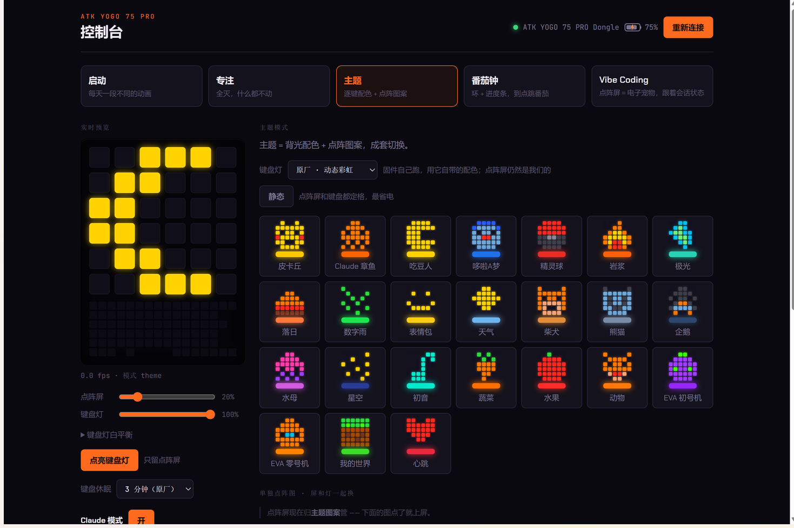
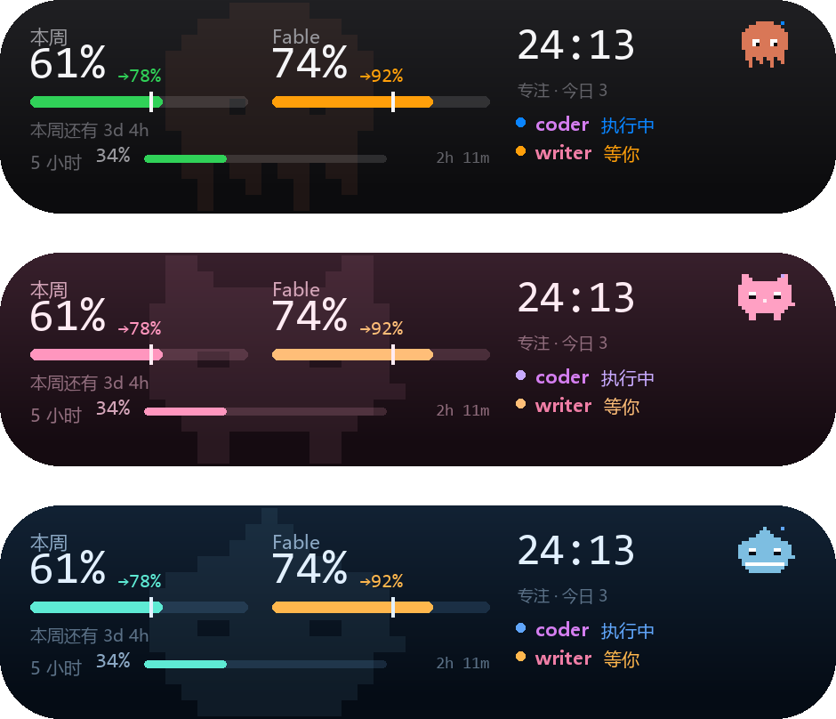

官方驱动只能往那块「像素屏」里写一张静态图。YogoDot 直接跟键盘的 HID 通道说话 —— 6×6 点阵和 84 颗按键背光，逐像素全彩，想怎么刷怎么刷。
控制台是本机网页，主题、图案、动画、番茄钟都在这里调；键盘的灯效由后台进程维持，关掉窗口不受影响。


默认是一个纯键盘灯效工具，跟 Claude 有关的部分要手动打开。
几十张 6×6 像素画，点一下就上屏。关掉软件再开还在。你自己的图放进 art/ 就行。
一套主题 = 一套逐键配色 + 一张点阵图。颜色按这块键盘的 LED 发光效率校过，不会发白。
点阵屏和背光一起动。官方驱动的「多帧动画」其实传不到设备 —— 这里是真的动。
点阵屏画进度环，到点背光闪一下。专注模式一键全灭。
Win+L 立刻全灭，解锁原样恢复；键鼠 3 分钟没动也熄。低电量自动先撤背光。电量和充电状态随时可见。
纯 Python + Windows HID API，不联网。点阵和背光都走 RAM 推流，零 flash 磨损；原厂配置第一次读到就备份。
不用装 Python，不用命令行。键盘要用 2.4G 接收器或有线连接 —— 蓝牙模式下固件不开放控制通道。
YogoDot-windows.zip，约 15MB。
设置和图案选择会存在 YogoDot.exe 旁边，所以别放在 C:\Program Files（放了也能跑，会自动改存到 %LOCALAPPDATA%）。
YogoDot.exe它会进托盘。左键点托盘图标开控制台，右键菜单里有开机自启开关。
Windows 会拦一下。这个 exe 没买代码签名证书（一年好几千，开源小工具就算了），
所以第一次运行 SmartScreen 会弹「已保护你的电脑」。点「更多信息」→「仍要运行」即可。
介意的话可以看 源码 自己用仓库里的 build.cmd 打包，产物一模一样。
想改代码就从源码跑：pip install -r requirements.txt 之后双击 yogo.pyw。
给同时在用 Claude Code 的人。控制台里一个按钮打开，默认关着。
鼠标中键唤出：官方额度（5 小时 / 本周 / 按模型的周额度）、各会话的状态、番茄钟。灵动岛式的动画。
点阵屏上一只电子宠物，跟着 Claude 的状态睡觉、张望、蹦跳、耷拉。有事可选弹一下胶囊。
服务器上跑的 Claude Code 也能接进来 —— hook 全部异步、永远 exit 0，不参与任何权限决策。
跟 Claude Code 的对接方式在 README 里。
config.bak，能整块推回去。build.cmd 打包。English: YogoDot is a third-party controller for the ATK YOGO 75 PRO keyboard's 6×6 dot-matrix screen and per-key RGB backlight — an alternative to the official ATK HUB driver. Pure Python + Windows HID, no flash writes. Pixel art library, themes, animations, pomodoro, power saving (blank on lock / idle). Optional Claude mode shows Claude Code quota and session state. Windows only; 2.4G dongle or wired.